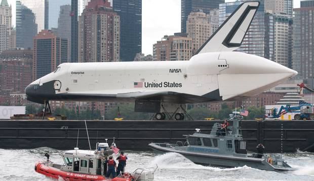
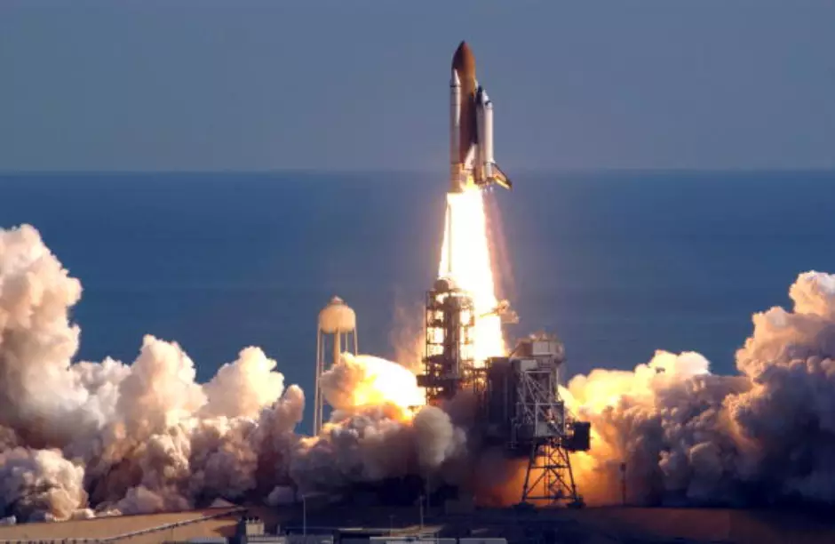
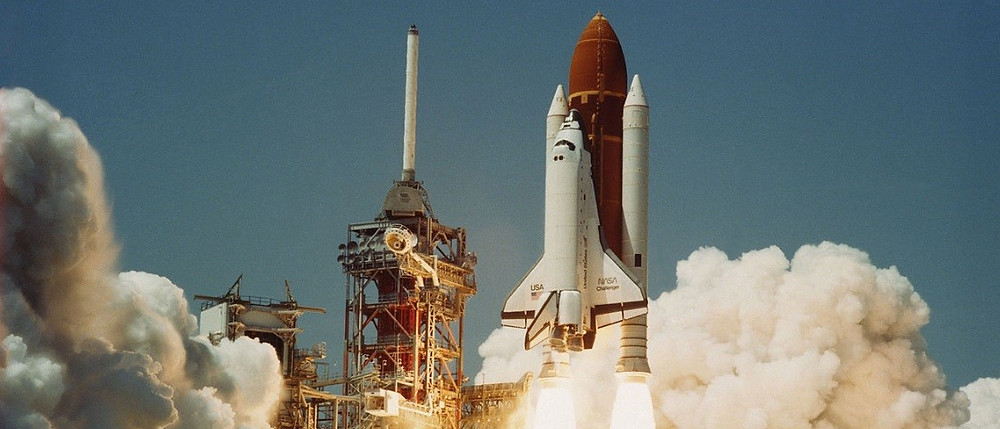
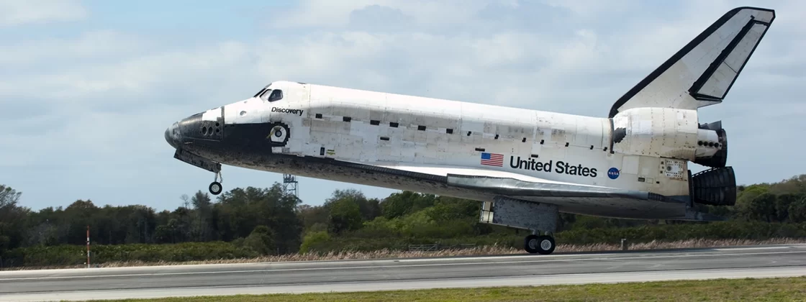
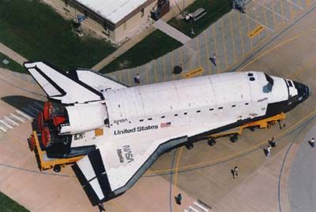

-
Enterprise
O Enterprise (também chamado de OV-101) foi o primeiro ônibus espacial da história, sua construção começou em 26 de julho de 1972 com o objetivo para voos de testes orbitais, sua propulsão dependia das cápsulas auxiliares, seu primeiro lançamento foi em um voo teste acoplado em um Boeing 747 em 18 de fevereiro de 1977. O Enterprise não tinha motores para fazê-lo decolar do chão, não tinha sistemas de controle de voo, nem sistema de proteção térmica, sua fuselagem era de poliuretano, usava Célula de combustível para gerar energia, não tinha Sistema de controle de reação, nem mecanismos hidráulicos para o trem de pouso[6] que eram abertos através de um mecanismo de explosão e gravidade. Foi projetado para ser o segundo ônibus espacial a ir ao espaço, contudo, uma decisão no ano de 1978 de não modificar o Enterprise em sua configuração para provas de aproximação e aterrissagem (ALT- Approach and Landing Test) deixou, a princípio, o Columbia como o único veículo orbital operacional. Deste modo o Enterprise se consolidou, basicamente, como um veículo de testes de pouso e de aerodinâmica, realizando várias missões, a partir de um Boeing 747 adaptado. Nestes testes, forneceu dados sobre o comportamento do ônibus espacial em regimes subsônicos e durante o pouso. Posteriormente, em 1986, após o acidente com o Challenger, foi estudada a possibilidade de uma reforma para adaptação ao voo espacial. Contudo optou-se pela construção de um novo veículo, o Endeavour. O Enterprise nunca saiu da atmosfera terrestre, apenas realizou voos de teste até o ano de 1985 quando foi "aposentado". No ano de 2012 foi danificado pelo Furacão Sandy enquanto estava exposto em Nova York.
-
Columbia
O Columbia foi o segundo ônibus espacial construído, baseado no Enterprise, e foi o primeiro com uma missão tripulada, sua construção começou em 1975 pela Rockwell International em Pasadena na Califórnia. Durante a construção em março de 1981 houve um incidente que causou a morte de 3 pessoas por asfixia. Sua primeira missão foi a STS-1 em 12 de abril de 1981 comandada pelo astronauta John Young. No total, o Columbia protagonizou 28 lançamentos, passou 300 dias no espaço, deu 4 808 voltas na Terra e pesava 3 600 toneladas,[7] foi o mais pesado de todos os ônibus espaciais.
-
Challenger
O Challenger foi o terceiro ônibus espacial a ser lançado, sua construção começou em 1979 e seu primeiro lançamento foi em 4 de abril de 1983, foi construído pela Lockheed primeiro como uma aeronave teste, a STA-099, depois convertido em ônibus espacial, o Challenger tinha menos peças para o sistema de proteção térmica comparado ao Columbia, também utilizava materiais mais leves, também foi o primeiro ônibus espacial a ter head-up display.
-
Discovery
O ônibus espacial Discovery é a mais antiga nave espacial americana que não se envolveu em nenhuma tragédia. Foi aposentada pela Nasa em 9 de março de 2011, quando pousou às 16h57 horas GMT no Centro Espacial Kennedy, na Flórida, nos Estados Unidos, depois de 27 anos de serviços prestados. Aquela foi a 35ª (trigésima quinta) viagem de um ônibus espacial com destino à Estação Espacial Internacional e a 39ª (trigésima nona) missão do Discovery ao espaço. Somando todas as horas de trabalho no espaço, o recordista Discovery passou o equivalente a cerca de um ano inteiro em órbita, sendo que nesta última missão de número STS-133, foram levados seis astronautas e um robot humanoide à Estação Espacial Internacional, designado de Robonauta. A equipe permaneceu no espaço por 13 dias e foram levados também novos instrumentos à Estação Espacial Internacional. A espaçonave Discovery foi lançada para o espaço mais do que qualquer outro ônibus espacial de sua era, sendo a que mais fez membros da tripulação em órbita. Foi a primeira nave espacial que recuperou um satélite em órbita, trazendo-o de volta à Terra. Esta nave, durante sua vida útil, visitou duas estações espaciais, a Estação Espacial Internacional e a Mir, construída pela ex-União Soviética. Ela lançou um telescópio, o Hubble, que revelou com seu olhar o mais profundo espaço, jamais percebido antes com tanta precisão. E por duas vezes ela demonstrou os Estados Unidos como um país com vontade de perseverar na sequência de devastadoras tragédias, levando novamente a América em órbita após os dois piores acidentes da história da exploração espacial (Challenger em 1986 e Columbia em 2003).
-
Atlantis
O Ônibus Espacial Atlantis começou a ser construído em 1979, sendo o seu primeiro lançamento em 3 de outubro de 1985 na missão STS-51-J, foi completada em metade do tempo do Columbia. Foi o primeiro ônibus espacial americano a acoplar na estação espacial russa Mir em 29 de junho de 1995 na missão STS-71, foi o único ônibus espacial com a possibilidade de ser abastecido de energia solar da Estação Espacial Internacional, também marcou o encerramento do programa de Ônibus Espacial na missão STS-135.
-
Endeavour

A Endeavour, construída com as peças remanescentes e de reserva do programa dos ônibus espaciais americanos, em substituição da fatalmente desintegrada nave Challenger, em 1986, teve sua primeira missão designada STS-49 lançada em 7 de Maio de 1992, lançando o satélite Intelsat 603. Teve sua última missão, designada STS-134, realizada com êxito em 16 de Maio de 2011, levando um equipamento avaliado em US$ 2 bilhões, o chamado Espectrômetro Magnético Alfa (AMS, na sigla em inglês), que é utilizado para experiências de Física, pois este observatório irá esquadrinhar meticulosa e cientificamente os raios cósmicos, na busca pelo "antiuniverso", um suposto universo formado pela antimatéria e ainda, segundo as teorias astrofísicas em verificação, teria sido criada pelo Big Bang na mesma proporção que a matéria física ordinariamente já parcialmente conhecida. A construção do Endeavour começou em 1987 com o objetivo de substituir o Challenger, destruído durante um acidente em 1986. Peças sobressalentes das estruturas do Discovery e do Atlantis foram usadas na sua construção. A decisão de construir o Endeavour foi preferida à alternativa de reaparelhar o Enterprise porque o custo era menor.